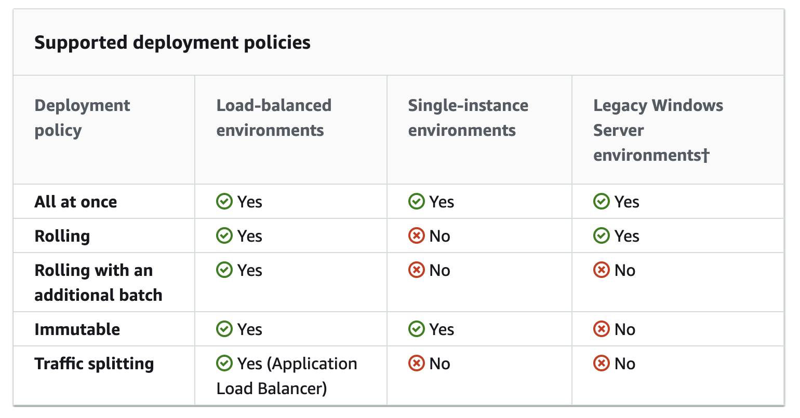

AWS Elastic Beanstalk (EB)
Table of contents
+ What is Elastic Beanstalk?
Elastic Beanstalk is a Platform as a Service (PaaS) that helps you deploy web apps with little knowledge about what kind of infrastructure is managed underneath. It configures its components to provide an environment for your application to run on. EB is basically a Cloudformation template with a UI.
+ Elastic Beanstalk Application
An Elastic Beanstalk application is a logical collection of application version and environments.
+ Environment Tier
When you create an EB application, you are asked to choose an environment tier. This tier determines which resources EB should provision to form your environment.
When creating a web app, you often require both environment tiers.
Web Server Environment
Key resources launched in the EB container:
- Elastic Load Balancer
- EC2 (Auto Scaling Group, Security Group)
A web server environment serves HTTP requests. Web server environment is given a URL of myapp.region.elasticbeanstalk.com.
This environment creates an Elastic Load Balancer with a URL of of elb-id.region.elb.amazonaws.com.
In Amazon Route 53, this ELB URL has a CNAME Record to the environment URL.
This ELB sits in front of EC2 instances in a Auto Scaling Group (ASG). The stack on EC2 instances depends on which platform you chose (eg. Python 3.8 running on 64bit Amazon Linux 2).
However, in each instance sits one common component called the host manager (HM). HM manages all sorts of monitoring, deploying, and metrics related to the instance.
By default, EC2 instances are placed in a security group which allows all connection through port 80 (HTTP). Additional security groups maybe configured as needed.
Worker Environment
Key resources launched in EB container:
- SQS
- EC2 (Auto Scaling Group), Sqsd
- Cloudwatch
Worker environment is usually set up for long running tasks to run in the background.
A worker environment sets up an Amazon SQS queue. This queue often consists of messages from a web server environment.
On each EC2 instance runs a Sqsd daemon and a processing application. The daemon reads the message from the SQS queue and sends it as an HTTP POST request to the processing application. Upon a 200 OK response from the processing application, Sqsd sends a delete message call to SQS.
EC2 instances publish their metrics to Amazon Cloudwatch. Auto Scaling retrieves usage data from Cloudwatch and scales instances accordingly.
+ Deployment
Each deployment is identified with a deployment ID which increments from 1.
In-Place Deployment Policies

All at once
Every instance is killed and updated at the same time. The deployment is quick in that sense, but it results in a short loss of service. Also, it can be dangerous in case of a failure to deploy, and may be tricky to rollback.
Rolling
Updates one batch of instances at a time. So a batch can be down during an update which may result in reduced availability for a short time. However, there is no downtime unlike ‘All at once’, but the entire deployment process takes a longer time.
Rolling with additional batch
To avoid any reduced bandwidth in regular rolling deployment, an extra batch of instances is launched and rolling update is performed there. Hence, the number of instances up during deployment stays the same. This takes longer time.
Immutable
Instead of updating instances, a complete new Auto Scaling Group set of instances is created. This is even slower.
Traffic Splitting
Create a new set of instances and test it with a portion of the incoming traffic, while the rest of the traffic is still going to the old deployment version. This is as slow as ‘Immutable’.
Blue/Green Deployment Policy
One additional deployment option is the Blue/Green deployment.
All the other deployment policies above performs an In-Place deployment, which means the update happens within an EB environment. However, Blue/Green deployment goes beyond the instances inside the environment.
To avoid downtime, your deployment is launched to a complete new set of environment and then the CNAMEs of old and new environments are swapped to redirect traffic instantly.
+ Configuring Environments
There are many different ways to configure environments.
Order of Precedence
- Settings applied directly during create/update environment
- Saved configuration objects in S3
- Configuration files (.ebextensions, env.yaml)
- Default values
Configuration Files (.ebextensions)
You can place .config files in a folder .ebextensions at the root of the application source bundle.
Each .config files are applied in alphabetical order. YAML is recommended for configuration files but both YAML and JSON are supported.
Option Settings
Use option_settings key to configure environment options
option_settings:
- namespace: namespace
option_name: option name
value: option value
Linux Server
You can also configure the software running on your instances.
Check these link1, link2 for details.
Environment Manifest (env.yaml)
Place an env.yaml file at the root of the application source bundle to configure the environment. You can configure the name, solution stack, and links to other environments. There are some overlaps between .configs and env.yaml. It seems env.yaml is more environment specific, while .config files can handle overall configuration of the application.
Check the link for details.
+ EB CLI
EB CLI is an open-source project hosted in this repository.
To use the CLI application, however, clone this setup repository instead.
References: